pig art · NCPigs in the City
also: Lexington's painted pigs · Pigs on Parade
Everybody in Lexington can name their favourite one.
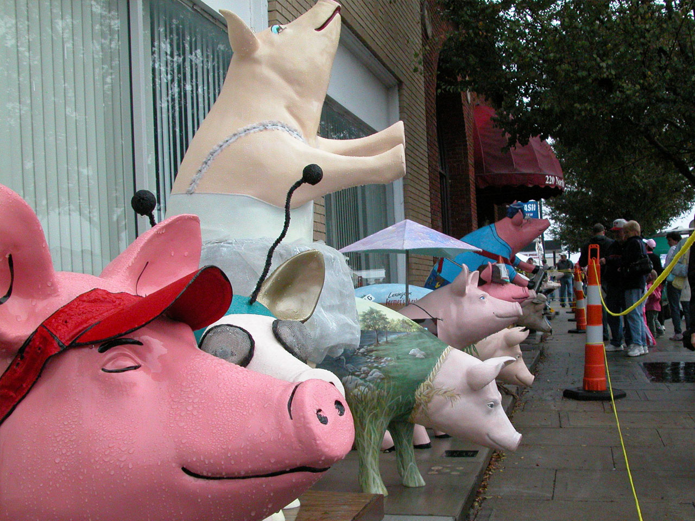
Life-sized pig sculptures, painted by artists and set out on the sidewalks of Lexington, Davidson County. Uptown Lexington, Inc. — the non-profit set up to bring business back to the town centre — ran the first exhibition in 2003 with twenty pigs, each sponsored by a business for $1,000, which paid for the whole thing. More than 40,000 people came that first year. The pigs are fibreglass blanks, identical until the artist gets them, and they come back painted as anything: a fire engine, a bulldozer, a jigsaw puzzle, a winged horse. Retired ones stay out around town.
Where the pigs came from
The form is borrowed. Tradition holds — the painted-animal street exhibition spread from the cow parades of the late 1990s, and each town that took it up picked an animal of its own. Lexington's animal chose itself: the town calls itself the Barbecue Capital of the World and has held a barbecue festival on Main Street every October since 1984.
The exhibitions ran 2003 to 2005, and again in 2008 and 2009. In 2019 Uptown Lexington announced the pigs would return in 2020. A sponsor paid $1,000 in the first round and got a pig with the sponsor's commission on it; the money covered the programme. What the town got was a reason to walk from one block to the next, which is what a downtown revitalisation programme is usually trying to buy.
{kind=link}
The names
The pigs are named, and the names are the point. Caterpiggar is a Caterpillar bulldozer: yellow, with an exhaust stack, a radiator grille, a dozer blade across the front, a model number P8 on the flank, and CATERPIGGAR lettered in the machine-maker's own typeface with its red underline. Fire Hog is a fire engine, red, with ladders down the side, the city fire department's crest on the shoulder and a black helmet over the snout. Pork Knox is money — banknotes and coins painted all over it, gold trotters, a bar chart along the back. Pigsaw is covered in jigsaw pieces. Pigasus is deep blue with gold wings, planets and stars. Newbee is banded teal and gold with gold antennae and a gauzy wing laid over its back. Deck the Halls is three small pigs in Santa hats and striped scarves around a signboard.
Inference — the naming is doing the same work as a barbecue restaurant's sign: it takes an animal that is about to be eaten and makes it a character with a job. The difference is that a Pigs in the City pig has no meat to sell, so the pun can be about anything at all, and usually is. None of these pigs is eating.
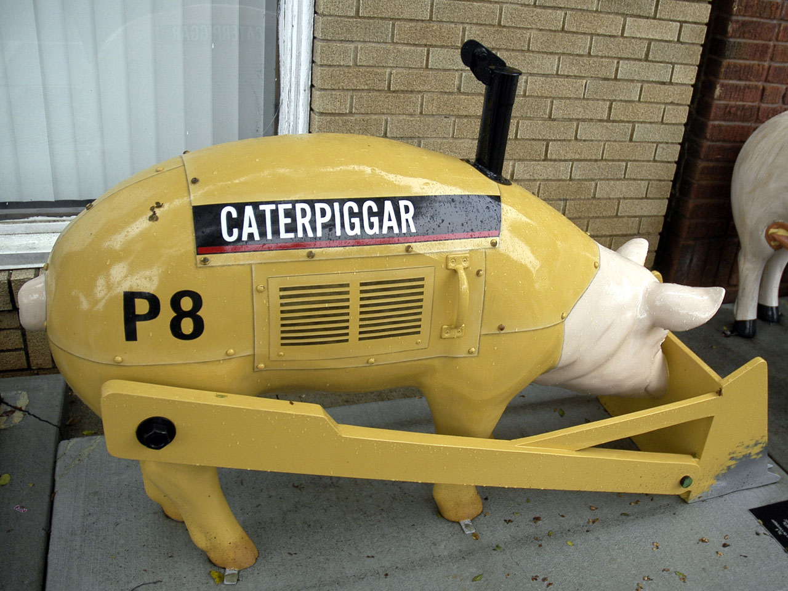
{kind=link}
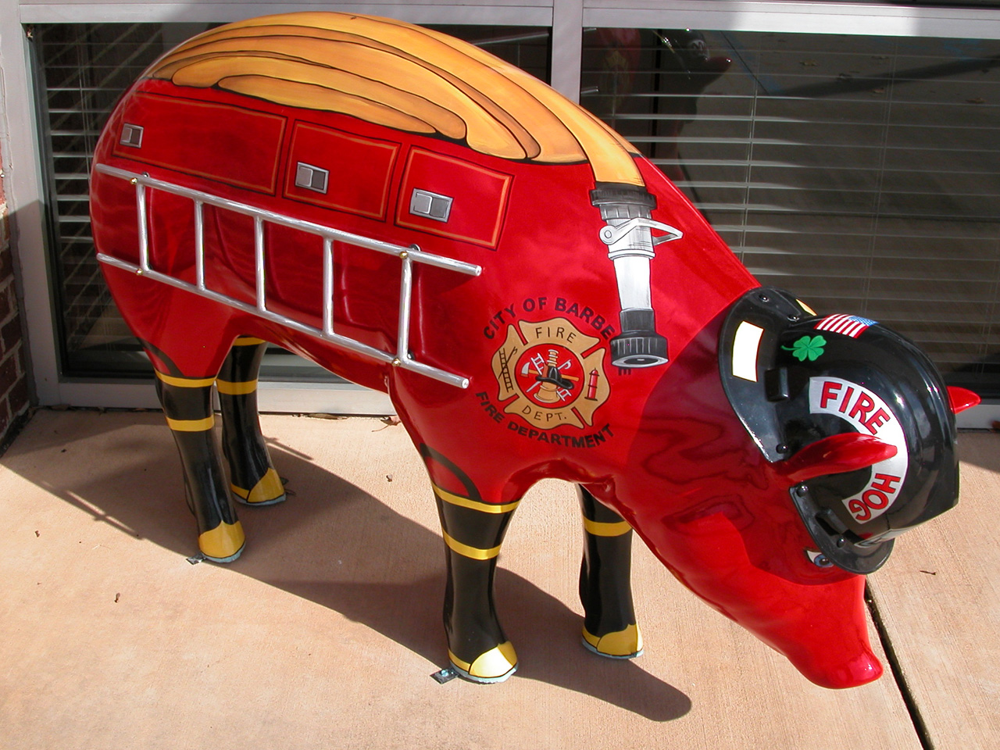
{kind=link}
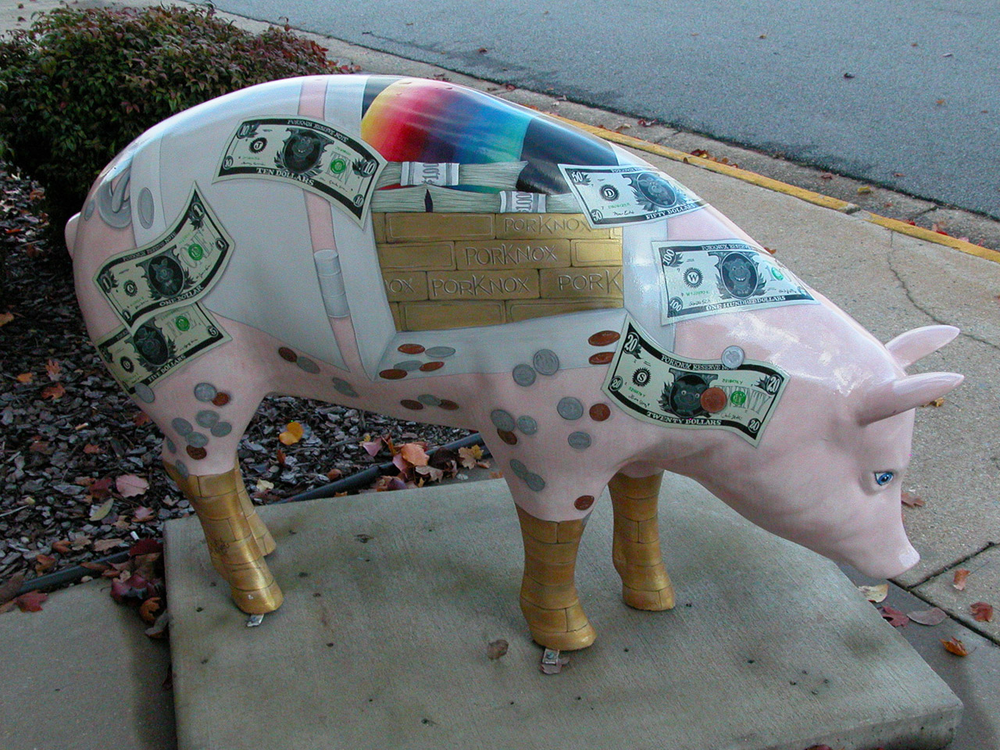
{kind=link}
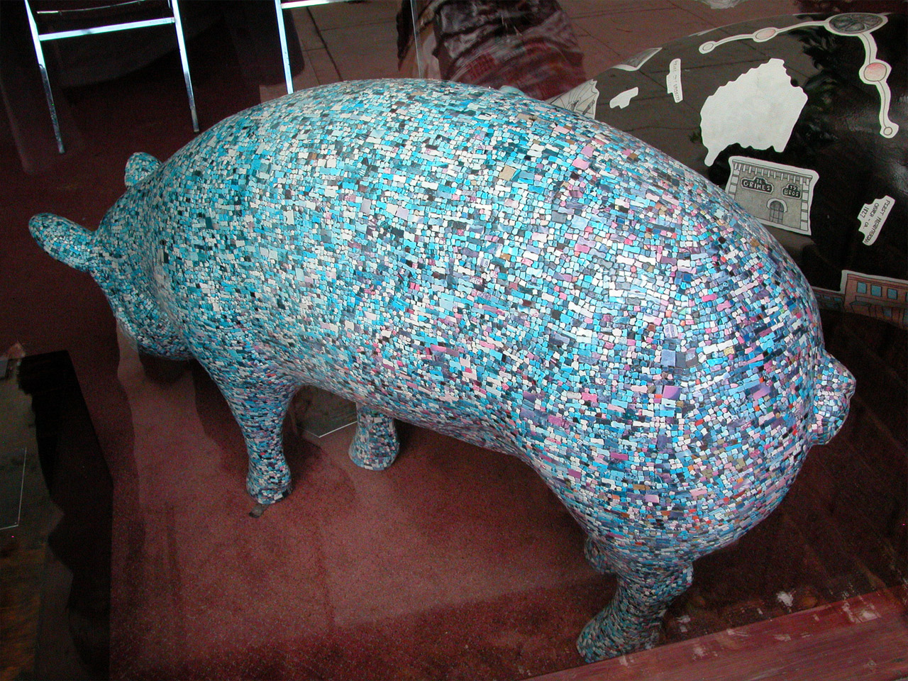
{kind=link}
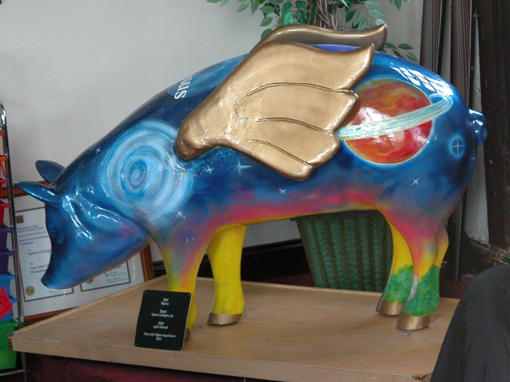
{kind=link}
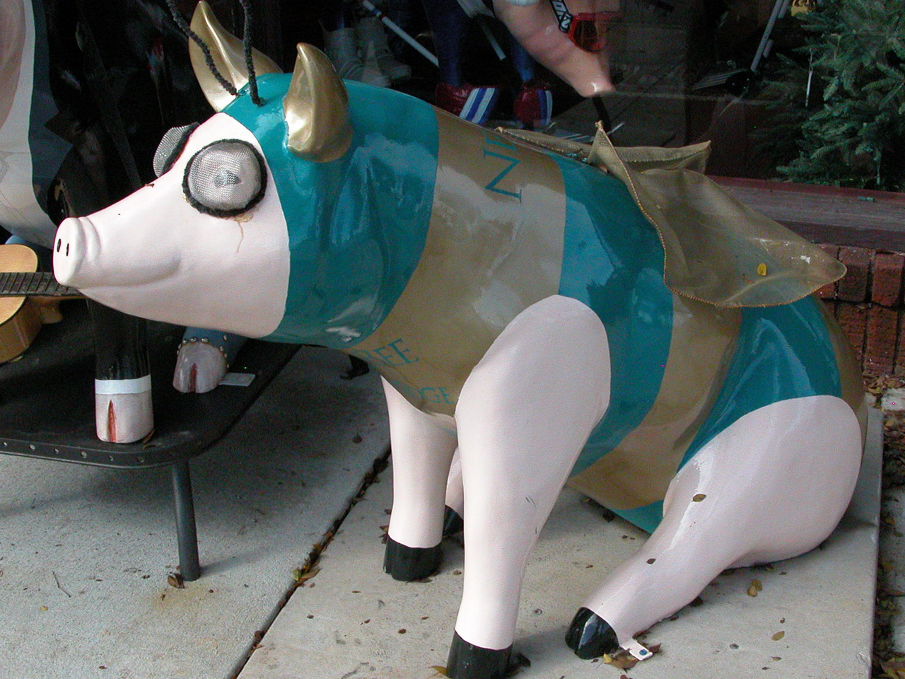
{kind=link}
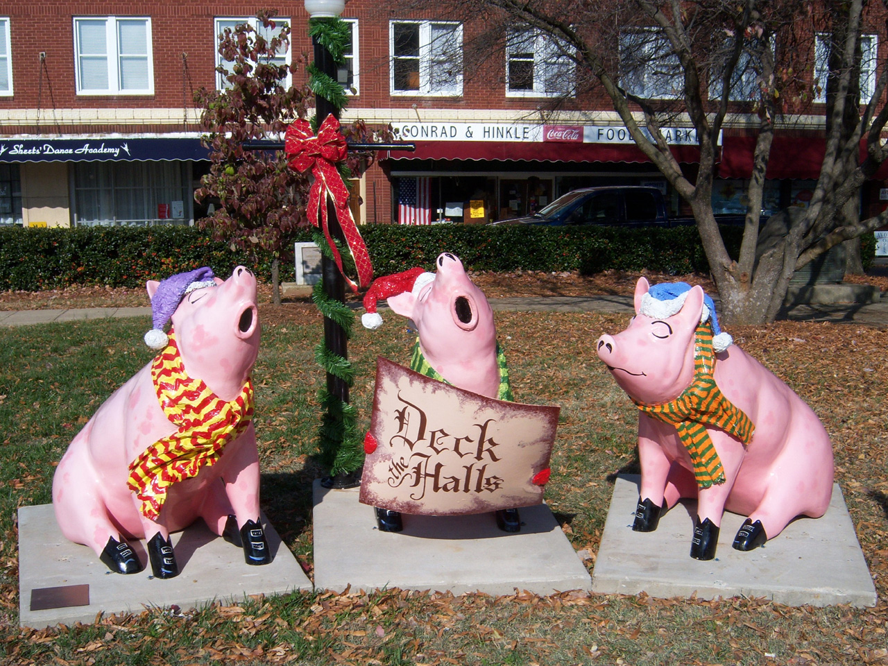
{kind=link}
What happens to them afterwards
They do not go away. Dennis Brown photographed a set in 2008 and captioned them as previous entries now on display in various places in Lexington — a pig outside the business that sponsored it, a pig on a corner, a pig by a door. A visitor walking uptown meets pigs from several different years at once and cannot tell which round each came from without asking.
Tradition holds — the Barbecue Festival is when most people see them, because that is the Saturday the street is closed and everyone is walking. The festival brings its own inflatable and costumed pigs on top of the permanent ones.
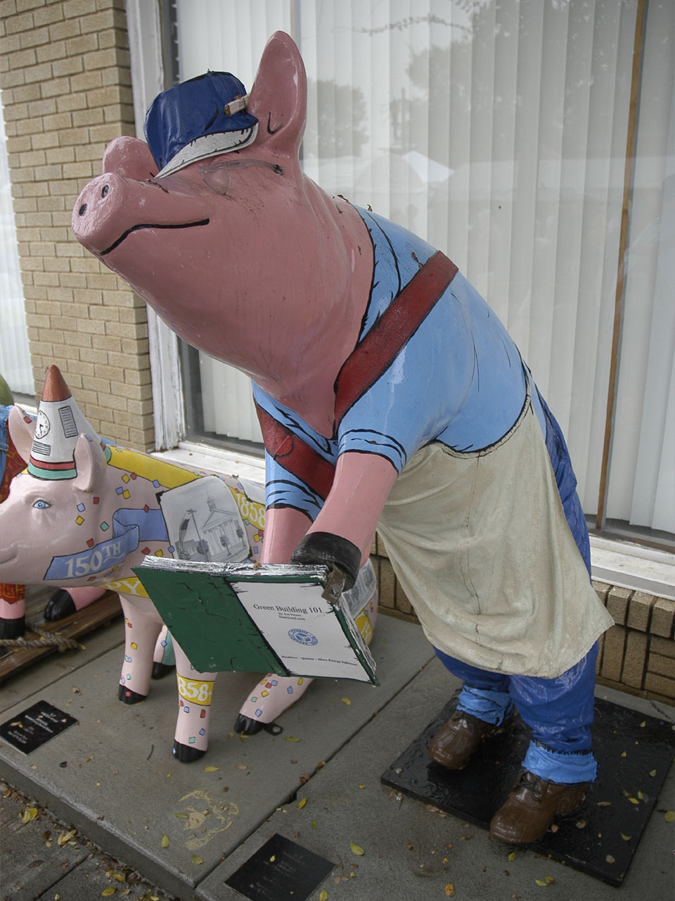
{kind=link}
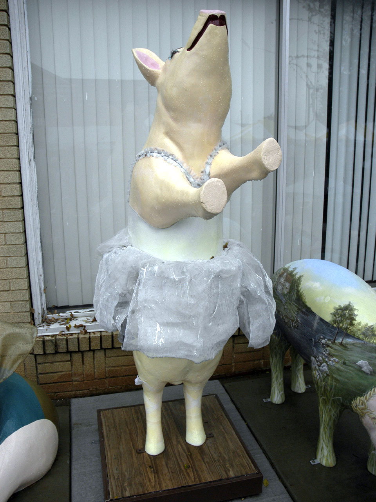
{kind=link}
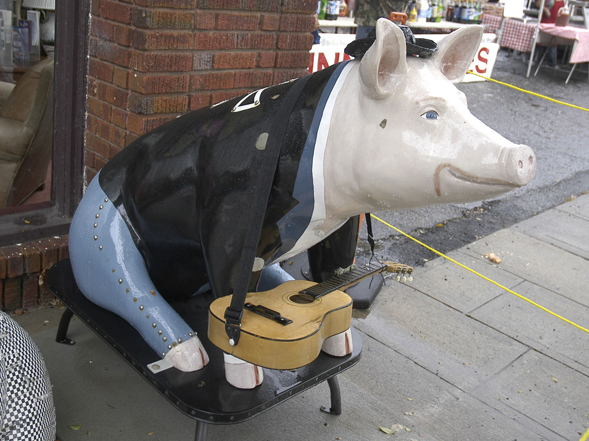
{kind=link}
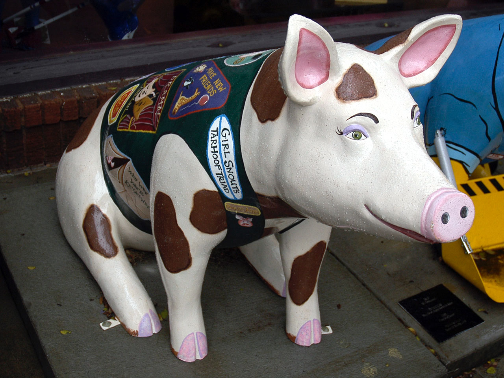
{kind=link}
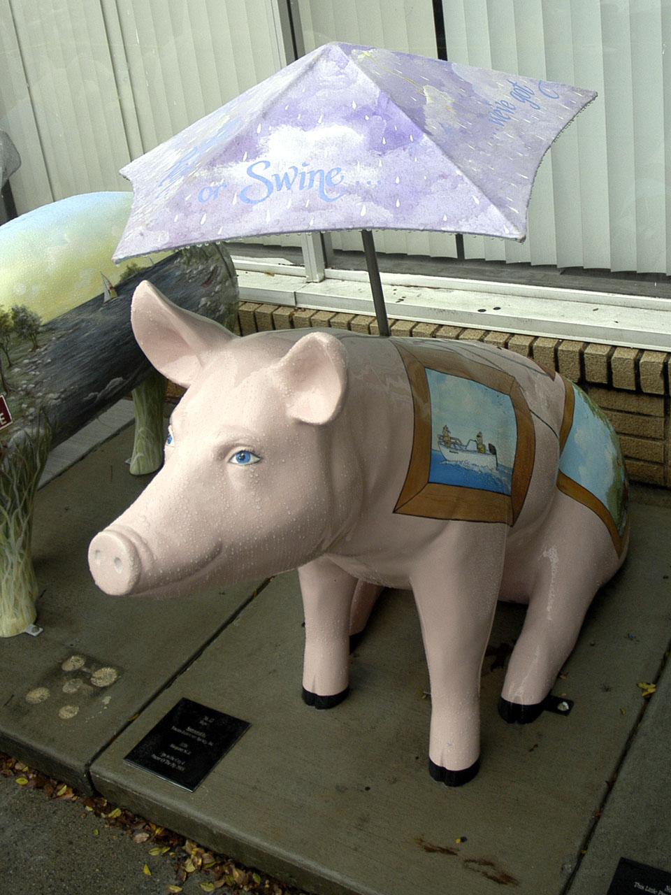
{kind=link}
Facts
| kind | statue |
|---|---|
| state | NC |
| region | North Carolina, The North Carolina Piedmont |
| where | 35.8240, -80.2534 (town) · OpenStreetMap · open in maps Harvested · osm |
| links | Lexington, North Carolina — Wikipedia (Pigs in the City) |
| confidence | medium · needs verification · updated 2026-09-16 |
Its kin
Pictures
Sources
- Lexington, North Carolina — Wikipedia · link
- Pigs in the City, Lexington, North Carolina — photographs by Dennis Brown — Dennis Brown · link
- Wikimedia Commons · link
- Lexington Barbecue Festival — Wikipedia · link
Where it came from: Cited a source we name · Harvested pulled from an open dataset · Tradition what the tradition says, hedged · Inference this project's reasoning · Field somebody stood there. This record as JSON.